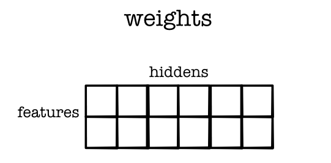

Module 2.4 - Networks with Tensors
Module 2.4
Applying Neural Networks
Start
Shape Maniputation
Permutation
tensor.permute(1, 0)


Shape Maniputation
Permutation
tensor.permute(2, 1, 0, 3)
Rearranges dims in order given.
How does this work
Storage : 1-D array of numbers of length size
Strides : tuple that provides the mapping from user indexing to the position in the 1-D storage.
Tensor Functions
Unary
new_tensor = tensor.log()Binary (for now, only same shape)
new_tensor = tensor1 + tensor2Reductions
new_tensor = tensor.sum()Tensor Ops
Map - Apply to all elements
Zip (same as zipWith) - Apply to all pairs
Reduce - Reduce a subset
Zip With Broadcasting

Zip With Broadcasting
Code
out = zeros(3, 2)
for i in range(3):
for j in range(2):
out[i, j] = a[i] + b[j]Matrix Scalar Addition
Doesn't Work!
matrix1.view(4, 3) + tensor([1, 2, 3, 5])Does Work!
matrix1.view(4, 3) + tensor([1, 2, 3, 5]).view(4, 1)Applying the Rules
(3, 4, 5) | (3, 1, 5) => (3, 4, 5)
(3, 4, 1) | (3, 1, 5) => (3, 4, 5)
(3, 4, 1) | (1, 5) => (3, 4, 5)
(3, 4, 1) | (3, 5) => X
Map Gradient

Zip Gradient

Reduce Gradient

Zip Broadcasting

Example: Negative
Example: Negative Back
Example: Inverse
Example: Inverse Back
Matrix-vector operations

Backwards (Expand)
Backwards (Expand)
Rules:
You can return gradient for broadcasted input.
Autodiff will collapse it to the original size.
Chain Rule
If a variable is used twice, derivative is the use paths.
Quiz
Outline
Training
Simple NLP
Training
Reminder
Dataset - Data to fit
Model - Shape of fit
Loss - Goodness of fit
Linear Model Example
Parameters


Model: Math
Implementation Tricks
Batching -> Compute the loss on many examples.
Parameters -> Store all in Tensors.
Opt -> Decide how to change the parameters
Batching

Batching
Extra dimension on all the data.
Will be very important for future assignments
Parameters
Tensors inside the model.
Receive the gradient updates
Accumumlated i.e. summed for each update
Optimizer
Decide how to update the parameters.
Example
Parameter Fitting
Compute the loss function, \(L(w_1, w_2, b)\)
See how small changes would change the loss
Update to parameters to locally reduce the loss
Loss
Compute Loss
out = model.forward(X).view(data.N) loss = -((out * y) + (out - 1.0) * (y - 1.0)).log()
Model: Code
Model
class Network(minitorch.Module): def __init__(self): ... self.layer1 = Linear(2, HIDDEN) self.layer2 = Linear(HIDDEN, HIDDEN) self.layer3 = Linear(HIDDEN, 1)
Layer 1: Weight
Layer 1: Bias

Key Task
Use broadcasting to implement the linear function
Hint: Align batch x features x hidden to make it work
Layer 2: Weights

Compute Derivatives
Step 2
(loss.sum().view(1)).backward()
print(model.layer1.w_1.value.grad)Layer 1: Weight Grad
Update Parameters
Step 3
for p in model.parameters():
if p.value.grad is not None:
p.update(p.value - RATE * (p.value.grad / float(data.N)))Broadcasting
Batches
Loss Computation
Linear computation
Autodifferentiation
Gradient updates
Observations
Exactly the same function as Module-1
No loops within tensors